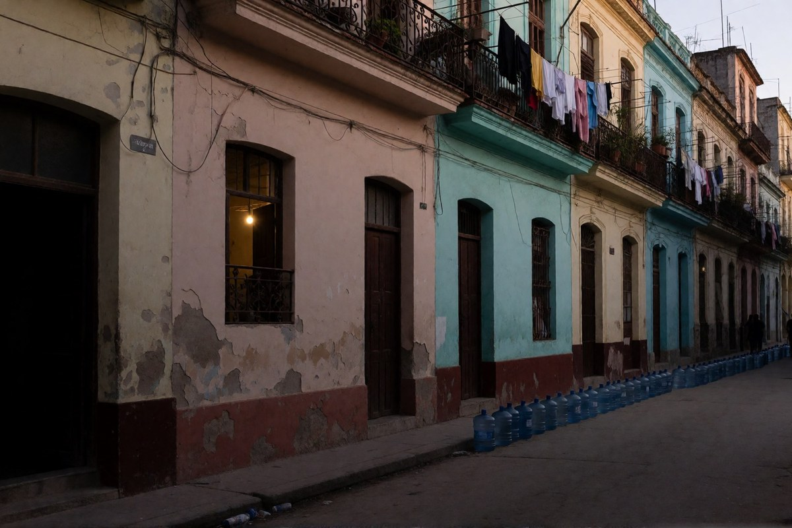
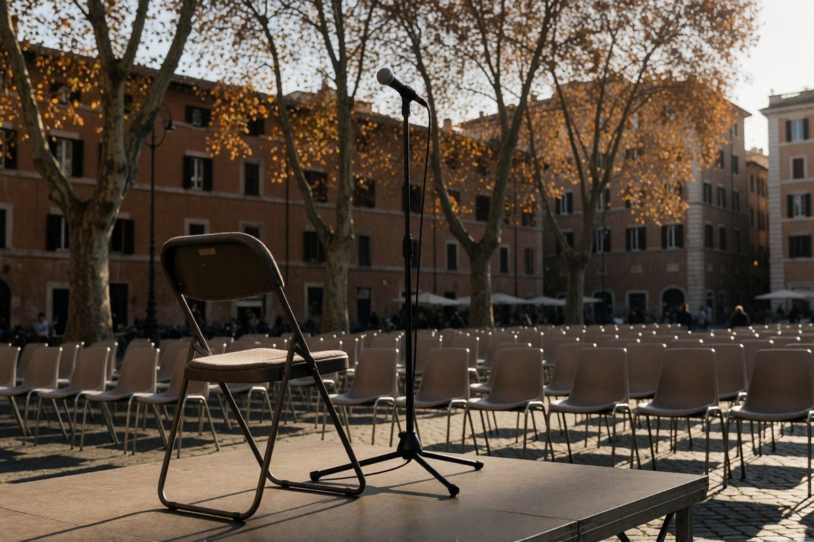

Attualità · 14 novembre 2026
Di Battista e gli esuli cubani: chi può parlare per Cuba?
Una donna cubana lo ferma a Roma e gli chiede perché non parli della dittatura. Un lungo post su Facebook accusa gli attivisti di fare il gioco americano. L'editoriale per gli abbonati, con la risposta dell'autore.
di Franco Zanghì
«Perché non parli della dittatura?». È la domanda che una donna cubana, Evelyn Cuervo, ha rivolto ad Alessandro Di Battista il 7 novembre a Roma, a margine di un evento pubblico. Il video l'ha pubblicato lei su Instagram e, come scrive il Secolo d'Italia, ha fatto il giro dei social.
Sul caso, il 10 novembre, ha scritto un lungo post su Facebook Pino Roscia. La sua tesi è netta: gli attivisti cubani non difendono il popolo cubano, la scena è una messinscena mediatica, e la regia, dice, è sempre la stessa, quella americana. Chiude con uno slogan: «Cuba libera dall'embargo». Non è l'editoriale di un giornale, è un post. Ma dice quello che pensano in molti, e merita una risposta seria.
Quello che il post dice di giusto
L'embargo americano contro Cuba dura da più di sessant'anni, e ogni anno l'Assemblea generale delle Nazioni Unite lo condanna. Scuola e sanità pubbliche, sull'isola, esistono davvero. E lo stesso Di Battista, operato all'Avana, ha ringraziato i medici cubani: ha fatto bene, e sulla sua salute nessuno ha niente da dire.

Ma la domanda era un'altra
La domanda di Evelyn Cuervo non riguardava la salute di Di Battista, né l'embargo. Riguardava le sue parole. Di Battista è un uomo politico, parla in pubblico di politica, e in pubblico gli si può rispondere. Quando lui risponde che per liberare Cuba devono andarsene gli americani, lei lo interrompe e insiste sulla dittatura. È una domanda legittima, e va ascoltata, non trattata come un'aggressione.
Chi, a Cuba, può parlare
Poi c'è la tesi centrale del post: che parli per Cuba solo chi vive a Cuba, e che gli esuli facciano, parole di Roscia, «mercenariato politico». Allora chiediamoci chi, sull'isola, possa davvero parlare.
Secondo Prisoners Defenders, alla fine di agosto i prigionieri politici a Cuba erano 1.339, il numero più alto da decenni. Molti sono cittadini comuni arrestati per aver protestato contro la mancanza di acqua e di luce. Ad aprile il governo ha annunciato la liberazione di 2.010 detenuti, e secondo Human Rights Watch tra loro non c'era nemmeno un prigioniero politico.
Quindi chi vive a Cuba non può fare quello che Roscia fa ogni giorno su Facebook: criticare il proprio governo senza finire in carcere. Gli esuli parlano proprio perché, dentro, non si può. Dare del mercenario a chi lo fa non risponde alla loro domanda.

E l'embargo
È una politica discutibile, e se ne può discutere. Ma lo stesso Human Rights Watch ha scritto che l'embargo non è una scusa per tenere in carcere i critici. Si può essere contro l'embargo e contro la dittatura nello stesso tempo: anzi, è la posizione più coerente. E quanto alla regia americana, nel post c'è un'accusa, non un documento.
Dove sto io
Sto con la signora Cuervo. La libertà che chiede a Di Battista è quella che lui ha qui, in Italia, e che usa ogni giorno per dire quello che pensa del nostro governo, degli Stati Uniti e della Nato. Chiedere che valga anche per i cubani non è un affronto. È il minimo.
Fonti
- Pino Roscia, post su Facebook «Roma. Aggredito Di Battista. E la regia è sempre la stessa», 10 novembre 2026
- Today, «Alessandro Di Battista contestato dagli attivisti cubani», 8 novembre 2026
- Secolo d'Italia, 9 novembre 2026
- Prisoners Defenders, rapporto del 10 settembre 2026 (1.339 prigionieri politici a fine agosto)
- Human Rights Watch, «Cuba's prisoner release excludes critics», 8 aprile 2026
Versione scritta dell'editoriale uscito il 14 novembre 2026 sul canale per gli abbonati. La tesi discussa è quella di un post pubblico su Facebook di Pino Roscia del 10 novembre 2026; le valutazioni sono dell'autore. Articolo pubblicato sul sito il 14 novembre 2026.